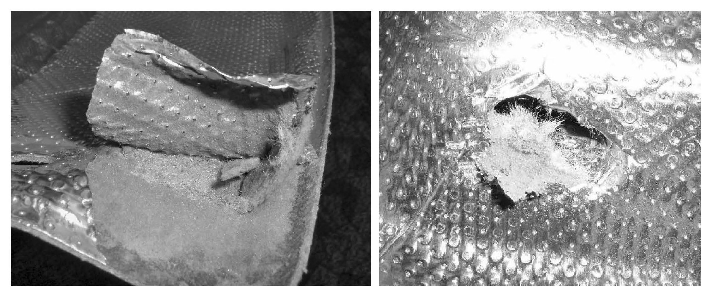

Exhaust System - Heat Shield Replacement Guidelines
26 08 02Aug. 28, 2008
2015831 Supersedes T.B. Group 26 Number 07 - 07 Dated October 2, 2007 Due to removal of Routan applicability.

Vehicle Information
Condition
Exhaust Heat Shield, Replacement Guidelines
Underbody heat shields are important for proper vehicle performance. Heat Shields are to be inspected after completion of any type of repair to the underbody (exhaust system, transmission, etc.), and if damaged, replaced
Technical Background
Damaged heat shields may exhibit the following symptoms:
^ Bent / Moved out of tolerance heat shield material
^ Lack of sufficient clearance
^ Torn / Damaged heat shield material
^ Contaminated (fluid saturation) heat shield material

^ Peeling / Separating heat shield material resulting from damage
Production Solution
No production change required.

Service
Any evidence of heat shield damage described in the Technical Background section of this bulletin will require replacement of the heat shield. See Repair Manual Group 26 Exhaust system, Emission controls in ElsaWeb.
Warranty

Information only.
Required Parts and Tools
No Special Parts Required.
No Special Tools Required.
Additional Information
All part and service references provided in this Technical Bulletin are subject to change and/or removal. Always check with your Parts Dept. and Repair Manuals for the latest information.